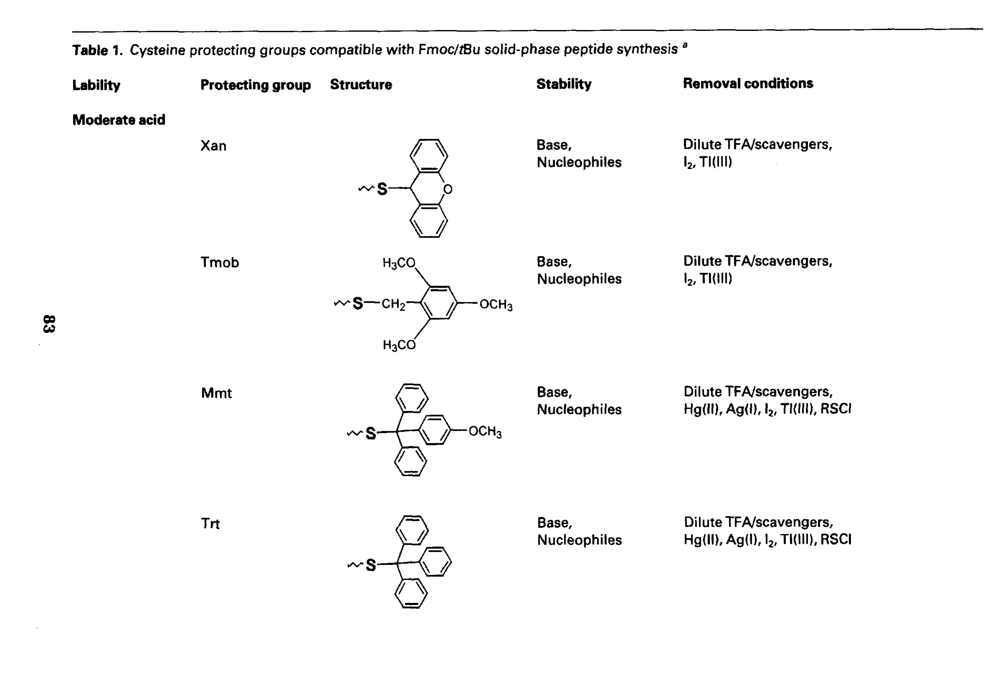
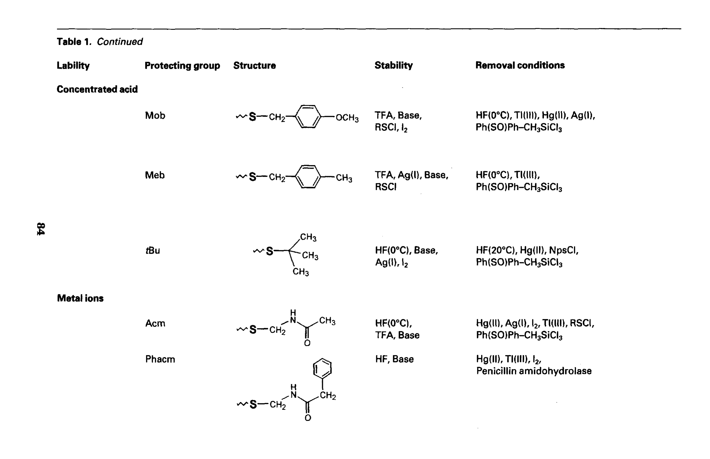
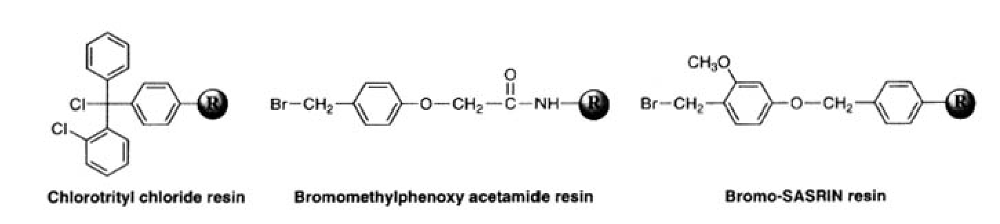
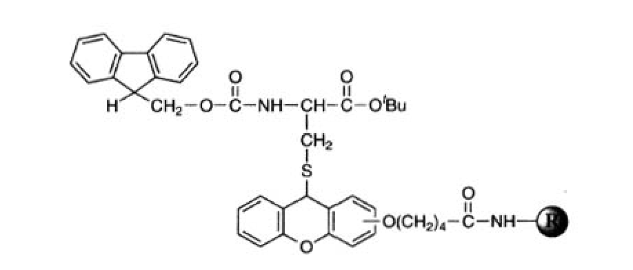
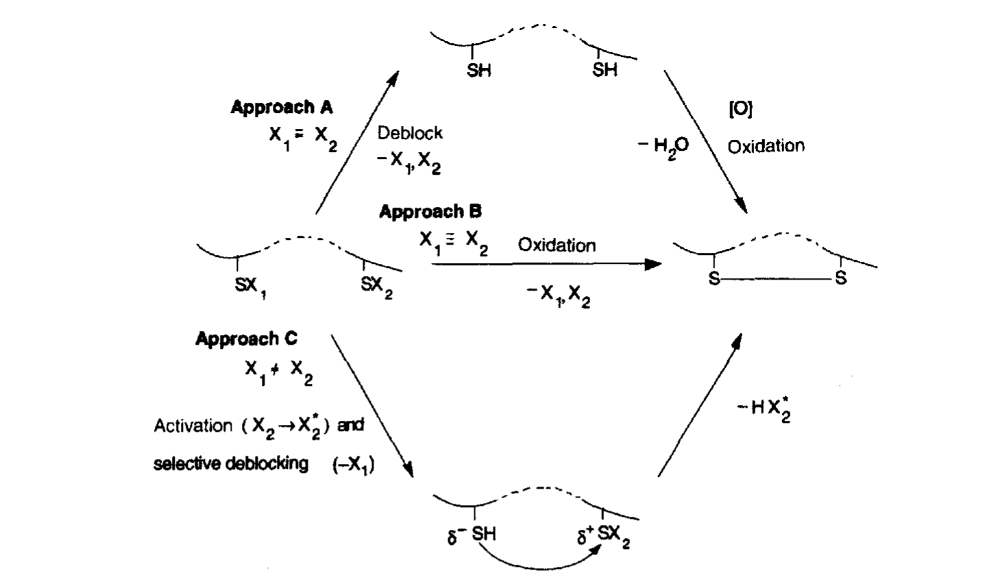
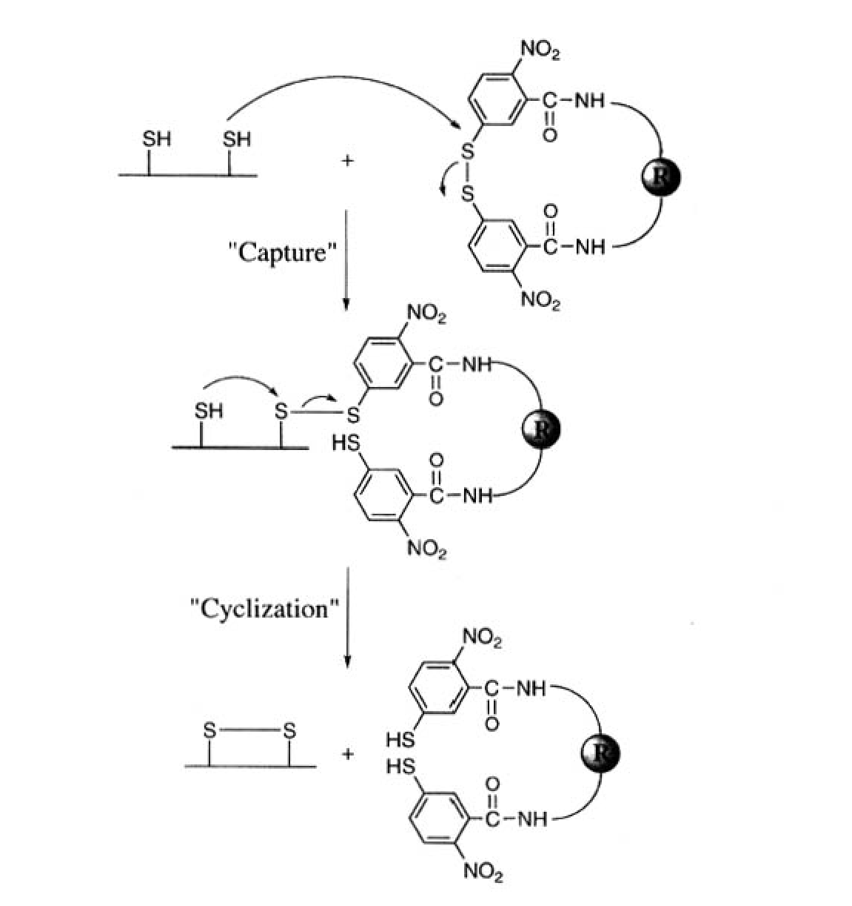
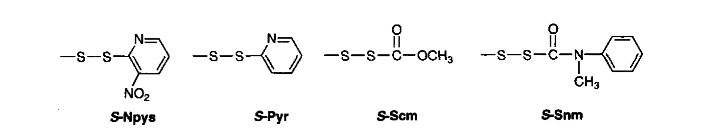
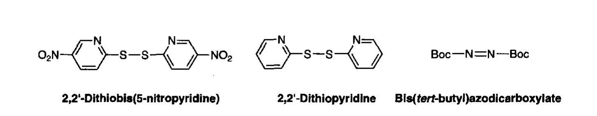

第四章
Preparation and Handling of Peptides Containing Methionine and Cysteine
含甲硫氨酸和半胱氨酸肽的制备与处理
Fernando Albericio, Ian Annis, Guillermo Royo, George Barany
Fmoc Solid Phase Peptide Synthesis: A Practical Approach (OUP)
pp. 77–114
━━━━━━━━━━━━━━━━━━━━━━━━━━━━━━━━━━━━━━━━━━━━━━━━━━
1. 引言 (Introduction)
甲硫氨酸 (Methionine, Met) 和半胱氨酸 (Cysteine, Cys) 是蛋白质中仅有的两种含硫氨基酸。虽然它们都含有硫原子，但化学性质截然不同：Met 的硫以硫醚 (thioether) 形式存在，而 Cys 的硫以硫醇 (thiol) 形式存在，并可进一步氧化形成二硫键 (disulphide bond)。这些含硫官能团赋予了它们独特的化学反应性，也带来了在固相多肽合成 (SPPS) 中的特殊挑战。
在 Fmoc/tBu 正交保护策略中，这两种残基的引入和处理需要特别关注。本章系统讨论了 Met 和 Cys 在 SPPS 中可能遇到的问题及其解决方案，涵盖保护基选择、消旋化控制、二硫键形成策略等核心主题。
| 核心要点 Met 的主要问题: 硫醚易被烷基化 (alkylation) 和氧化 (oxidation) Cys 的主要挑战: 保护基策略、消旋化 (racemization)、二硫键形成 共同关注: 酸切割步骤中的副反应、纯化策略 |
|---|
2. 甲硫氨酸 (Methionine, Met)
甲硫氨酸的侧链是一个硫醚基团 (—S—CH₃)。在 Fmoc/tBu 策略中，Met 不需要侧链保护基，但其硫醚基团在合成过程的多个环节中可能发生不良反应，主要包括烷基化和氧化两大类问题。
2.1 烷基化问题 (Alkylation)
Met 的硫醚在酸性条件下可以被碳鎓离子 (carbocation) 烷基化，生成稳定的锍盐 (sulphonium salt)。这一副反应主要发生在最终酸切割 (acid cleavage) 步骤中——在 TFA 处理时，保护基 (如 tBu、Trt) 的去除会释放出活泼的碳鎓离子，这些碳鎓离子可以攻击 Met 侧链的硫原子。
具体机理：在强酸条件下，叔丁基 (tBu) 保护基以碳鎓离子的形式离去，碳鎓离子与 Met 硫醚反应生成 S-叔丁基锍盐 (S-tBu sulphonium salt)。类似地，三苯甲基 (Trt) 保护基也可以产生类似反应。生成的锍盐使肽带正电荷，在 HPLC 中表现为额外的色谱峰，降低目标肽的纯度。
预防策略：清道剂 (Scavenger) Cocktails
为防止烷基化，需要在酸切割液中加入合适的清道剂，捕获游离的碳鎓离子。常用配方：
| Reagent | 组成 | 特点 |
|---|---|---|
| Reagent K | TFA/phenol/H₂O/thioanisole/EDT (82.5:5:5:5:2.5) | 最经典配方，清道剂组合全面 |
| Reagent R | TFA/thioanisole/EDT/anisole (90:5:3:2) | 减少酚的用量 |
| Reagent B | TFA/phenol/H₂O/TIS (88:5:5:2) | TIS 代替 thioanisole/EDT |
| 增强型 | 增加 EDT 比例至 5–10% | 对含多个 Met 的肽更有效 |
关键原理：EDT (ethanedithiol) 和 thioanisole 是硫醇/硫醚类清道剂，它们与碳鎓离子的反应速率远快于 Met 硫醚。TIS (triisopropylsilane) 作为硅烷类清道剂，通过 Si—S 键有效捕获含硫亲电试剂。
| ℹ️ 叔丁基化锍盐的可逆性 如果已经发生了 Met 烷基化（形成 S-tBu 锍盐），这在一定程度上是可逆的。 方法：将肽在 50–55°C 下加热 24 小时，可以消除叔丁基，恢复游离 Met。 注意：此方法仅对 tBu 锍盐有效，对 Trt 类锍盐效果有限。 |
|---|
2.2 氧化问题 (Oxidation)
Met 的硫醚可以被部分氧化为亚砜 (sulphoxide, [Met(O)])。这一反应可在以下情况下发生：
长时间暴露于空气中（特别是在溶液状态下）
光不稳定 (photolabile) 连接臂的切割条件（如 UV 照射），可能导致几乎定量的 Met(O) 形成
某些氧化性试剂的存在
Met(O) 的严重问题在于：亚砜基团是手性的 (chiral)，因此氧化后的肽样品至少会出现三个组分——未氧化的肽、(R)-亚砜非对映异构体和 (S)-亚砜非对映异构体。这导致 HPLC 分析时出现额外的色谱峰，严重降低产物的纯度和表征的准确性。
| ⚠️ 预防措施 在惰性气氛 (N₂ 或 Ar) 下操作含 Met 的肽 尽量缩短溶液状态下的处理时间 避免使用氧化性试剂 避免使用光不稳定连接臂合成含 Met 的肽 |
|---|
2.3 Met(O) 亚砜的还原方法
如果已经发生了 Met 氧化，可以在切割前后进行还原处理。本章 Protocol 1 描述了四种主要方法：
| 🔧 Protocol 1: Met(O) 还原方法汇总 方法 1 — TMSBr/EDT 法: 三甲基溴硅烷与 EDT 配合。无水条件，反应 15 min。优点：可在从树脂切割的同时完成还原。 方法 2 — NMA (N-甲基巯基乙酰胺) 法: 水相条件，12–36 h，35–40°C。优点：条件温和。缺点：反应时间长。 方法 3 — NH₄I/(CH₃)₂S/TFA 法: 碘化铵/二甲硫醚/TFA 体系。0°C 反应 3 h。★ 重要优点：兼容二硫键！ 方法 4 — TiCl₄/NaI 法: 四氯化钛/碘化钠体系。反应快速，但条件较难控制，可能导致过度还原。 |
|---|
3. 半胱氨酸 (Cysteine, Cys)
半胱氨酸是多肽化学中最具挑战性的氨基酸之一。其侧链硫醇 (—SH) 不仅需要适当的保护基策略，还涉及消旋化控制、二硫键形成、以及多种副反应的预防。Cys 的化学是本章的核心内容，占据了大部分篇幅（页 81–114）。
3.1 Cys 侧链保护基 (Protecting Groups)
Cys 的侧链保护基选择是二硫键形成策略的基础。不同的保护基具有不同的去除条件，这构成了正交保护 (orthogonal protection) 的基础。Table 1（书页 83–84）详细列出了与 Fmoc/tBu SPPS 兼容的所有 Cys 保护基。
Table 1. Cysteine 保护基列表（书页 83–84）

Table 1 (part 1). Cys 保护基——酸敏感类别

Table 1 (part 2). Cys 保护基（续）
3.1.1 中等酸敏感保护基（稀 TFA 可去除）
这类保护基可以在低浓度 TFA 中被选择性去除，而不影响 tBu 类保护基。它们是"一级正交"保护基，常用于需要在树脂上进行选择性脱保护的策略中。
去除机理: 硫原子上的保护基通过三苯甲基型碳鎓离子机理去除。稀 TFA (1–7%) 即可有效去除。
S-Xan (Xanthen-9-yl, 占吨-9-基): 1% TFA/DCM 即可去除。极其酸敏感，适合需要极高选择性的场合。
S-Tmob (2,4,6-trimethoxybenzyl, 三甲氧基苄基): 约 7% TFA 去除。三个甲氧基增强了碳鎓离子的稳定性，使其比 Trt 更易去除。
S-Mmt (4-methoxytrityl, 甲氧基三苯甲基): 稀 TFA 去除。与 Trt 类似但只有一个甲氧基，酸敏感性介于 Trt 和 Tmob 之间。
S-Trt (Trityl, 三苯甲基) ★最常用: 需稍浓 TFA（如 TFA:TIS:H₂O = 95:2.5:2.5）去除。最常用的 Cys 保护基，在 TFA 切割条件下同时去除，释放游离硫醇。
3.1.2 浓酸稳定保护基（需 HF 去除）
这类保护基在 TFA 中稳定，需要更强的酸（如 HF）去除。它们构成了"二级正交"保护基，在多对二硫键合成中用于保留到最后的 Cys 对。
S-Mob (4-methoxybenzyl, 甲氧基苄基): 需 HF (0°C) 去除。在 TFA 切割条件下完全稳定。
S-Meb (4-methylbenzyl, 甲基苄基): 需 HF 去除。
S-tBu (tert-butyl, 叔丁基): 需 HF (20°C) 去除。最难去除的 Cys 保护基之一。
3.1.3 金属/亲电试剂去除保护基
这类保护基需要金属离子（Hg²⁺, Ag⁺, Tl³⁺）或氧化剂（I₂）去除。它们提供了与酸化学完全正交的去保护途径。
S-Acm (Acetamidomethyl, 乙酰氨基甲基) ★常用: 可用 Hg²⁺(醋酸汞)、Ag⁺(硝酸银)、I₂ 或 Tl³⁺(三氟乙酸铊) 去除。是第二种最常用的 Cys 保护基，特别适合多对二硫键合成。
S-Phacm (Phenylacetamidomethyl, 苯乙酰氨基甲基): 可用酶 (penicillin G acylase, PAH) 去除。提供酶学正交性。
注意：Acm 去除常用的 I₂ 氧化法可以同时形成二硫键（见 3.3 节），在多对二硫键合成中非常有用。
3.1.4 还原去除保护基
S-StBu (tert-butylthio, 叔丁硫基): 可用 DTT、TCEP 或 Bu₃P 还原去除。条件温和，与大多数偶联条件兼容。
S-4-picolyl (4-吡啶甲基): 可用 Zn/AcOH 还原去除。
3.2 Cys 肽的固相合成
3.2.1 C 端 Cys 肽酸 (C-terminal Cys peptide acids)
当 Cys 位于肽链 C 端时，需要将其羧基锚定在固相树脂上。消旋化 (racemization) 是这一过程的核心问题。

Figure 1. 用于 C 端 Cys 肽酸合成的功能化树脂
| 消旋化数据对比 — 树脂上载方法 羟甲基树脂 + DIC/DMAP 催化: 10–40% D-Cys！完全不可接受 2-CTC 树脂 — 亲核取代: 消旋 0.3–2.5%，推荐方法 TDO 酯法: 低消旋，但操作复杂 PyAOP 低温法: 低温 (0°C) 偶联，消旋化极低 |
|---|
Protocol 3: Fmoc-Cys(Trt)-OH 上载 2-CTC 树脂——使用 DIEA 作为碱，在 DCM 中反应，避免 DMAP 催化带来的消旋化。
重复 Fmoc 脱保护过程中的消旋化与保护基密切相关：
| 锚定方式 / 保护基 | 消旋化程度 | 评价 |
|---|---|---|
| 对烷氧苄酯 + S-StBu | ~34% | 严重消旋 |
| 对烷氧苄酯 + S-Trt | ~24% | 中等消旋 |
| 对烷氧苄酯 + S-Acm | ~11% | 可接受 |
| 对烷氧苄酯 + S-tBu | ~9% | 较好 |
| 2-CTC 树脂 (任何保护基) | 检测不到 | ★ 推荐 — 位阻效应抑制消旋 |
关键结论：2-CTC 树脂通过其大位阻的三苯甲基氯基团，有效抑制了 Cys α-碳的质子化/去质子化，从而在重复脱保护过程中几乎完全消除了消旋化。
另一种策略是侧链锚定 (side-chain anchoring)：

Figure 2. Cys 侧链锚定策略
侧链锚定将 Cys 的巯基通过保护基连接到树脂上，α-羧基游离。这样避免了酯锚定带来的消旋化风险。肽链从 Cys 的 N 端方向延伸。
3.2.2 链组装中的消旋化
Cys 衍生物在偶联步骤本身也可能发生显著消旋（5–33%）。机理涉及 Cys α-质子的去质子化，形成烯醇中间体，再发生立体化学翻转。
减少偶联消旋化的策略：
避免预活化 (pre-activation)
使用位阻碱如 collidine 或 TMP 代替 DIEA
减少碱的用量
使用 CH₂Cl₂-DMF (1:1) 混合溶剂代替纯 DMF
| ✅ 安全偶联方法（< 1% 消旋化） 方法 1: Aminium/phosphonium 盐 + HOBt/HOAt + collidine，不预活化，CH₂Cl₂-DMF 方法 2: DIC/HOBt 偶联，5 min 预活化 方法 3: OPfp (pentafluorophenyl) 活性酯法 |
|---|
3.2.3 副反应 (Side reactions)
1) 3-(1-Piperidinyl)alanine 形成
Fmoc 脱保护步骤中（20% piperidine/DMF），Cys 可能发生 β-消除，生成脱氢丙氨酸 (dehydroalanine)，随后 piperidine 进行 Michael 加成，生成 3-(1-piperidinyl)alanine。PS 树脂比 PEG-PS 严重；Wang 树脂比 PAL 严重。
2) Acm 在 TFA 中的意外丢失
长时间 TFA 处理或高温下，Acm 可能部分丢失，释放游离硫醇，形成不期望的二硫键。
3) Acm 转移到 Tyr 的邻位
脱落的 Acm 基团可转移到 Tyr 残基酚羟基邻位，形成 Acm-Tyr 修饰。
3.3 二硫键形成 (Disulphide Bond Formation)
二硫键是多肽和蛋白质中最重要的翻译后修饰之一，对维持三维结构和生物活性至关重要。在 SPPS 中，二硫键的形成是一个核心挑战，特别是当肽含有多个二硫键时。
3.3.1 总体策略 (Scheme 1)
Scheme 1 概述了二硫键形成的三种基本策略。选择取决于肽中二硫键的数量、Cys 残基的排列，以及对区域选择性 (regioselectivity) 的要求。

Scheme 1. 二硫键形成的合成策略概述
方法 A — 统一保护基 / 游离硫醇氧化
所有 Cys 使用相同保护基（通常为 Trt），TFA 切割后同时释放所有硫醇
在溶液中氧化形成二硫键
优点：简单。缺点：无法控制二硫键配对（只适合单对二硫键或二硫键随机配对的肽）
方法 B — 保护基氧化切割直接形成二硫键
利用氧化性试剂（如 I₂、Tl³⁺）在去除保护基的同时形成二硫键
典型应用：I₂ 去除 Acm 同时形成二硫键
优点：效率高。缺点：氧化剂可能影响其他残基
方法 C — 定向（区域选择性）方法
使用不同正交保护基，逐步去保护/氧化，精确控制每对二硫键的位置
是多对二硫键合成的首选策略
典型策略：Trt（TFA 去除→空气氧化第一对）→ Acm（I₂ 氧化第二对）
3.3.2 游离硫醇前体氧化 (From free thiol precursors)
这是最直观的方法：先释放所有游离硫醇，然后在 controlled 条件下氧化形成二硫键。
(1) 空气氧化 (Air oxidation) — Protocol 6
最简便的方法：将肽溶于缓冲液 (pH 6.5–8.5)，暴露于空气中自然氧化
需要高稀释 (0.01–0.1 mM) 以促进分子内环化（vs 分子间二聚）
缺点：反应慢（数天）、可能形成二聚体、Met 可能被共氧化
| Protocol 6 要点 溶剂: 水或水/有机溶剂混合物（如 NH₄HCO₃ 缓冲液） pH: 6.5–8.5（微碱性条件有利于硫醇去质子化和氧化） 浓度: 0.01–0.1 mM（高稀释促进分子内环化） 时间: 数小时至数天 催化: 可加入微量 Cu²⁺ 或 DMSO 加速 |
|---|
(2) 氧化还原缓冲液法 (Redox buffer) — Protocol 7
使用还原型 (GSH) 和氧化型 (GSSG) 谷胱甘肽 (glutathione) 混合物作为氧化还原对。
机制：通过硫醇-二硫键交换 (thiol-disulphide exchange)，先形成混合二硫键，然后通过分子内重排纠正错误配对
比单纯空气氧化效果好——具有"自纠错"能力
这是蛋白质折叠中模拟天然氧化折叠过程的策略
GSH/GSSG 比例通常为 5:1 到 10:1 (GSH:GSSG)，总体浓度约 1–5 mM。
(3) DMSO 介导氧化
DMSO 作为温和氧化剂，在 pH 3–8 范围内均可使用
反应比空气氧化更快
★ 重要优点：兼容 Met——DMSO 不会氧化 Met 硫醚
DMSO 本身既是溶剂又是氧化剂，副产物 DMS（二甲硫醚）易挥发去除
(4) K₃[Fe(CN)₆] 氧化 (铁氰化钾)
经典方法，铁氰化钾作为氧化剂
缺点：需要去除铁盐副产物（通过透析或色谱分离）
目前较少使用，主要被 DMSO 和空气氧化取代
(5) 固相氧化 (Solid-phase oxidation)
利用固相合成的"假稀释效应" (pseudo-dilution effect)：在树脂上，肽链被固定在固相上，彼此之间距离较远，有利于分子内环化而非分子间二聚。
策略：选择性去除对酸敏感的保护基（S-Xan/S-Tmob/S-Mmt），保留其他保护基
在树脂上用空气或温和氧化剂氧化形成二硫键
然后再切割释放含有二硫键的肽
(6) Ellman 试剂介导的二硫键形成
Ellman 试剂 (5,5'-dithiobis-(2-nitrobenzoic acid), DTNB) 可以与游离硫醇反应，形成活化的混合二硫键中间体，然后与另一个硫醇反应完成二硫键形成。

Figure 3. 固相 Ellman 试剂介导的分子内二硫键形成
固相 Ellman 试剂的巧妙之处在于：将 Ellman 试剂固定在树脂上，肽链的一个 Cys 先与固相 Ellman 试剂形成混合二硫键，然后另一个 Cys 的硫醇进攻形成分子内二硫键，释放固相 Ellman 试剂。这种策略利用了固相的假稀释效应，非常有利于分子内环化。
3.3.3 直接由保护基氧化形成二硫键
这类方法利用氧化性试剂在去除保护基的同时直接形成二硫键，避免了游离硫醇中间体。对于 Acm 和 StBu 保护基尤其常用。
(1) I₂ 氧化
I₂ 可以同时去除 Acm 或 StBu 保护基并形成二硫键
机理：I₂ 氧化硫原子，形成磺酰碘中间体，然后发生分子内取代形成二硫键
反应条件：甲醇或 AcOH 中，室温，数分钟至数小时
过量 I₂ 需要用 Ascorbic acid 或 Zn 粉猝灭
注意：Met 可能被 I₂ 氧化为亚砜——需要保护或在氧化后还原
(2) Tl(tfa)₃ 氧化 (三氟乙酸铊)
Tl³⁺ 可以去除 Acm 保护基同时形成二硫键
反应条件：DMF 中，0°C 至室温，1–2 h
优点：反应快速，区域选择性好
缺点：铊盐有毒，需小心处理和去除
(3) 固体支持的二硫键形成
利用固相载体上的氧化反应，结合假稀释效应
可以减少分子间二聚的形成
3.3.4 双功能保护/活化基团和 Cys 活化试剂
除了传统的保护基策略，还有一些"双功能"基团，既能保护 Cys 硫醇，又能在去除时直接活化形成二硫键或其他修饰。

Figure 4. Cys 的双功能 S-保护/活化基团
Figure 4 展示了几种双功能基团，它们在保护 Cys 的同时，在脱保护时可以直接参与二硫键形成或 Cys 的选择性修饰。

Figure 5. 用于 Cys 活化的试剂
Figure 5 展示了专门用于活化 Cys 残基的试剂，这些试剂可以将 Cys 转化为更容易参与二硫键交换或其他反应的形式。
3.3.5 N 端 Cys 的特殊问题
N 端 Cys 在 Fmoc 去保护时可能发生特殊的副反应。哌啶可以攻击 Cys 的 α-氨基附近的反应中心，导致环化或其他副反应。建议使用特定的保护基组合（如 S-StBu 或 S-Acm）来减少这些问题。
3.3.6 多对二硫键的区域选择性合成
含有多对二硫键的肽（如胰岛素含 3 对、某些毒素肽含 3–6 对）是 SPPS 中最具挑战性的目标之一。区域选择性合成要求使用正交保护基策略，逐步去保护-氧化，精确控制每对二硫键的形成顺序。
经典策略示例——两对二硫键：
第一对 Cys 用 S-Trt 保护，第二对用 S-Acm 保护
Step 1: TFA 切割去除 Trt → 释放第一对硫醇 → 空气/DMSO 氧化形成第一对二硫键
Step 2: I₂ 氧化去除 Acm → 同时形成第二对二硫键
三对二硫键的策略：
需要三级正交保护基，如 Trt / Acm / Mob 或 Trt / Acm / tBu
Step 1: Trt 去除 → 第一对氧化
Step 2: Acm 用 I₂ 或 Tl(tfa)₃ 去除 → 第二对氧化
Step 3: Mob 用 HF 去除 → 第三对氧化（或用其他方法）
这种逐步策略的挑战在于每一步都需要高产率和高选择性，否则中间产物的纯化会变得极其困难。
本章要点总结
| Met 要点 硫醚不需保护基: 但需注意烷基化和氧化 烷基化预防: 使用含 EDT/TIS 的清道剂 cocktails (Reagent K/R/B) 氧化预防: 惰性气氛操作；已氧化可用 NH₄I/(CH₃)₂S/TFA 还原（兼容二硫键） |
|---|
| Cys 保护基选择 最常用: S-Trt（TFA 去除，释放游离硫醇） 多对二硫键: S-Acm（I₂/Tl³⁺ 氧化去除）+ S-Trt（TFA 去除）+ S-Mob/tBu（HF 去除） 侧链锚定: 可避免 C 端 Cys 的消旋化 |
|---|
| 消旋化控制 树脂选择: 2-CTC 树脂（位阻效应 → 检测不到消旋） 偶联条件: aminium/phosphonium 盐 + HOBt + collidine，不预活化，CH₂Cl₂-DMF 避免: DMAP 催化酯化、过量预活化、强碱 |
|---|
| 二硫键形成策略 单对二硫键: 空气氧化 / DMSO / 氧化还原缓冲液 多对二硫键: 正交保护基 + 逐步去保护/氧化（Trt→Acm→Mob） 固相优势: 假稀释效应有利于分子内环化 Ellman 试剂: 固相 Ellman 试剂是分子内二硫键的高效策略 |
|---|